> A máscara possui uma membrana de malha fria que auxilia no fluxo de respiração sem comprometer o isolamento necessário para a sua segurança.
> Para vesti-la, coloque primeiro a alça inferior que ficará na nuca e depois alça superior por cima das orelhas. As alças inferiores podem ser ajustadas com o regulador, assim como o apoio de nariz, que pode ser adaptado ao seu formato, trazendo mais conforto durante o uso.
> Como parte da proposta desde o início da pesquisa, esse produto é confeccionado usando apenas resíduos industriais, principalmente tapeçarias, sendo assim, sua máscara se torna limitada e exclusiva.
> Essa máscara é também uma proposta de otimização do uso de materiais. Ressignificá-los é uma necessidade para lidar com as consequências da produção em larga escala e tentar, ao máximo, minimizar os efeitos futuros.
> Todas as máscaras acompanham duas embalagens herméticas: uma para levar quando higienizada e outra para guardar após o uso.